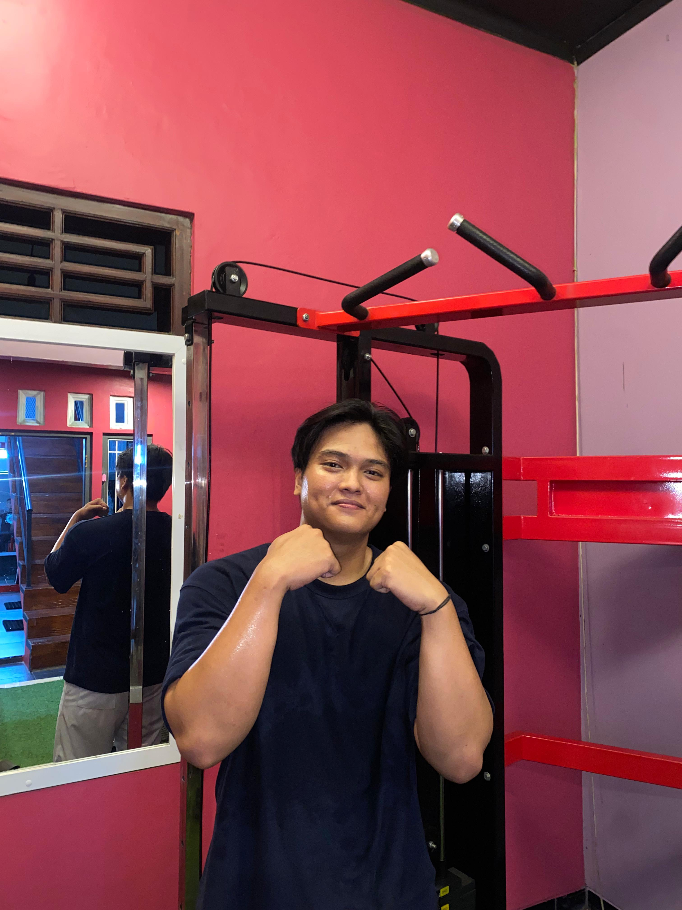

Nama : Maylano Risky Fauzi
Tanggal Lahir : 07 Mei 2004
Alamat : Perum P4a Jl.Gambyong barat Blok f No. 27, PudaKPayung, Banyumanik, Semarang
| Jenjang | Nama Institusi | Tahun |
|---|---|---|
| Sarjana (S1) | Universitas Dian Nuswantoro | 2024 - Sekarang |
| SMA | SMA Mardisiswa | 2020 - 2023 |
| SMP | SMPN 26 Semarang | 2017 - 2019 |
| SD | MIN Sumurejo Gunungpati | 2010 - 2017 |